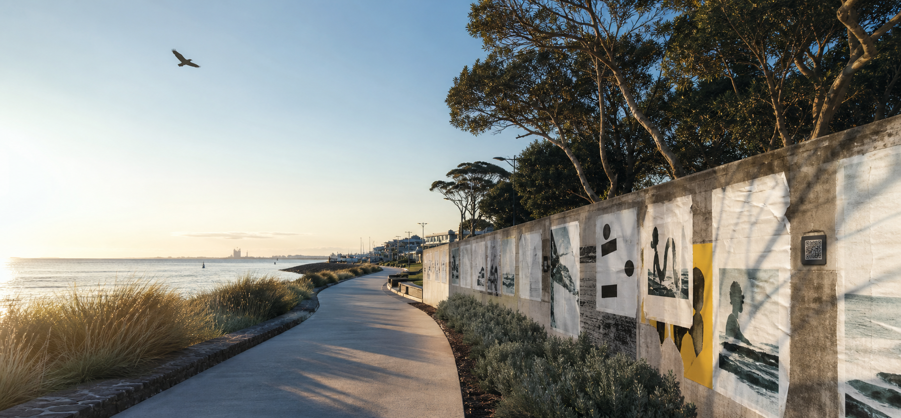
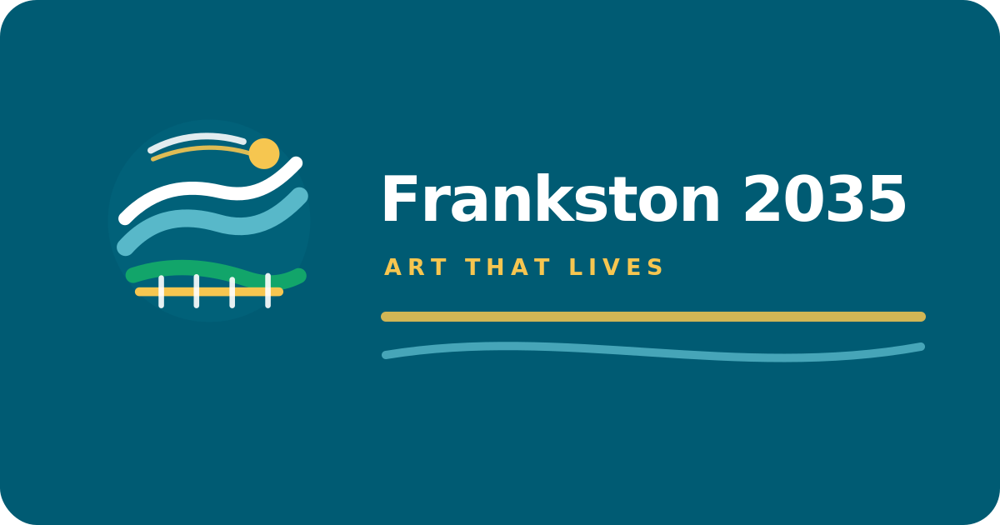
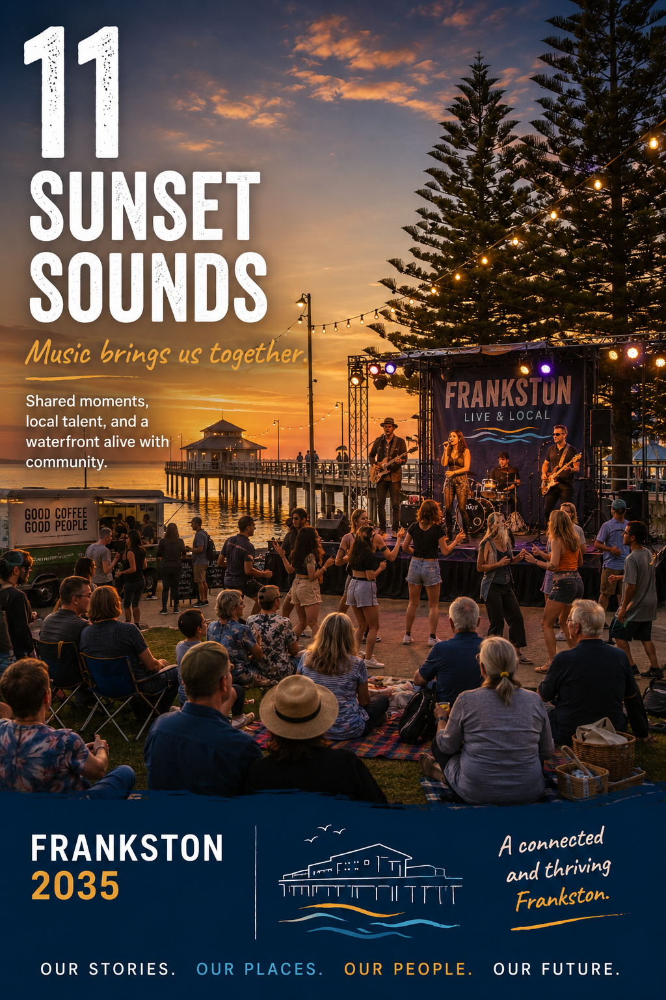
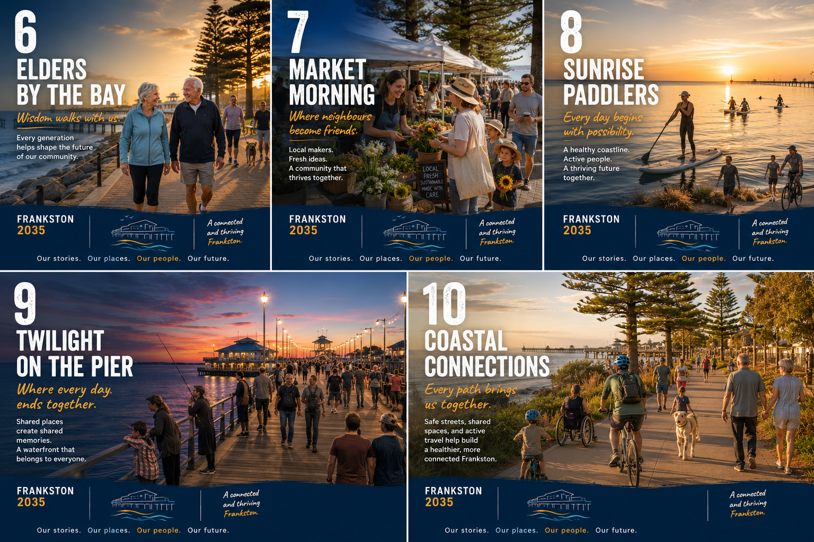
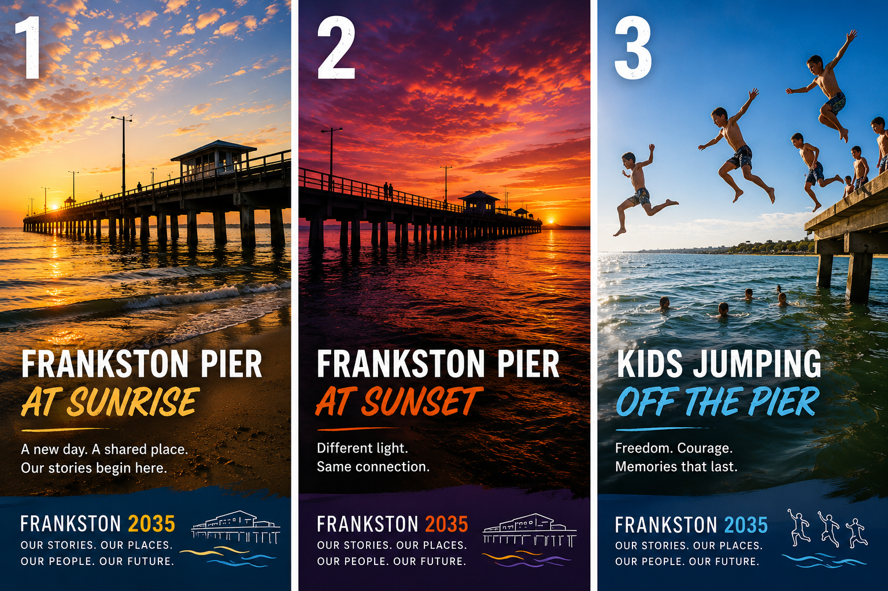
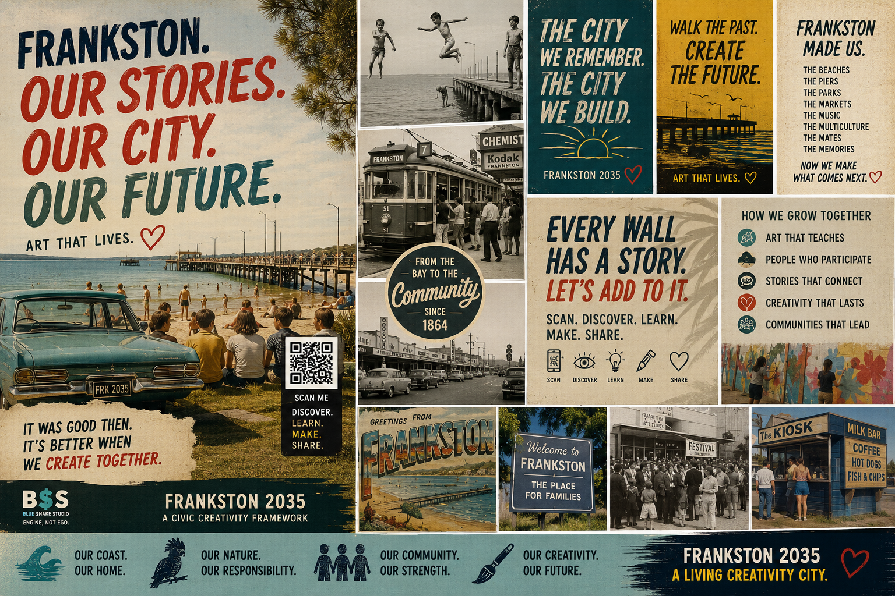
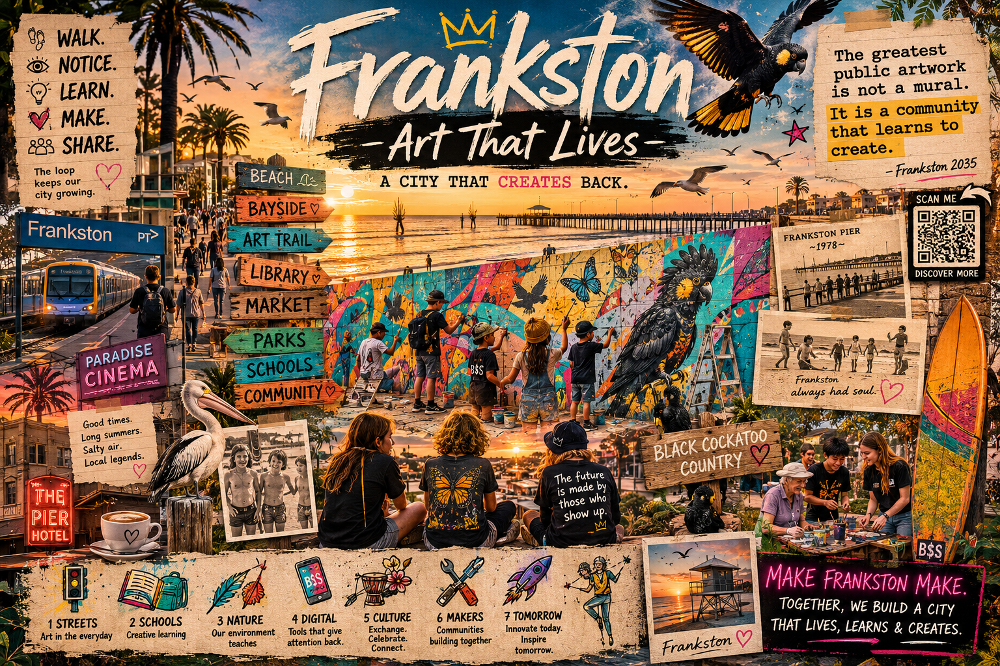
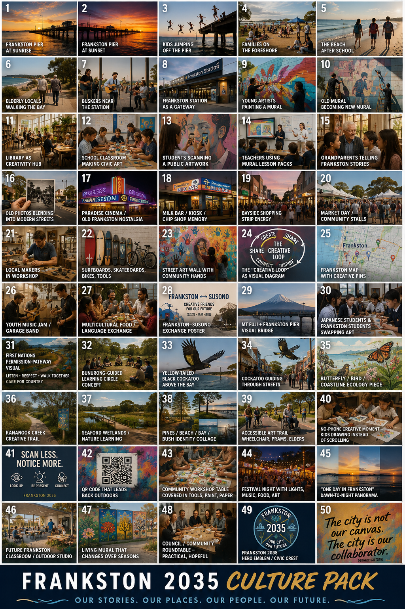
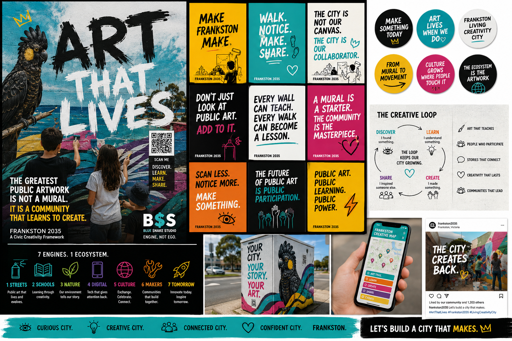
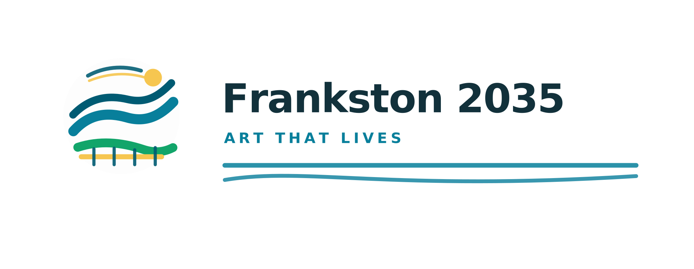

Frankston Hero
Used as the homepage hero background and OG social card image. Proposal draft — not real Frankston photography.
In use — hero Replace when approved photo existsImage Library
These are proposal and campaign design assets. They are not official approved Frankston City Council photography. Replace with real, rights-cleared Frankston images before any formal public launch.
Asset status
No image here is approved council photography. Do not use these images to imply council endorsement, real Frankston events, First Nations community involvement, or Susono participation. Replace with properly rights-cleared, consented, and captioned photography before public distribution.
In use now

Used as the homepage hero background and OG social card image. Proposal draft — not real Frankston photography.
In use — hero Replace when approved photo exists
Used as the Open Graph social preview image for most pages. 1200×630 campaign design.
In use — social card Replace when approved photo existsCampaign assets — draft
These images can be used in proposal presentations and pitch documents. They should not be published as if they are real Frankston photography or council-approved materials.

Homepage or community section. Suggests foreshore as a shared civic space.
Campaign draft
Schools page, foreshore context. Suggests youth connection to place.
Campaign draft
Events or community page context. Foreshore activation reference.
Campaign draft
Print Pack page, poster gallery overview. Shows the poster seeds as a set.
Campaign draft
Print Pack or pitch presentation. Three-panel poster spread.
Campaign draft
Civic identity, nostalgia framing. Poster or campaign reference.
Campaign draft
Community memory, local history framing. Collage design reference.
Campaign draft
Culture section, education overview. Shows design system components.
Campaign draft
Pitch presentation. Campaign identity reference board.
Campaign draft
Brand and design reference. For proposal pitch and review context.
Campaign draft
Print materials, branded overlays. Use with appropriate background colour.
Campaign draftBrand reference. Shows mark variations for proposal and pitch use.
Campaign draftWhat is still needed
Homepage, community section, foreshore pilot pages.
Pending — rights clearanceCreativity trail context, foreshore arrival scenes.
Pending — rights clearanceSchools page. Hands-and-materials images only — no student faces without consent.
Requires school + family consentDo not include. Requires guidance from appropriate Traditional Owner organisations before any such imagery is produced or published.
Traditional Owner guidance requiredOnly after sister-city custodian review and formal approval of exchange content.
Pending custodian reviewLibrary table, workshop, or market activation. Consent and release required for identifiable people.
Requires consentRecord owner, location, date, caption, permission status, and alt text for every image before use.